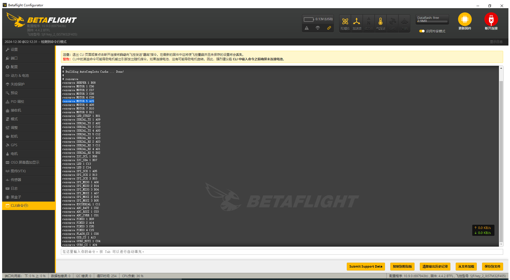
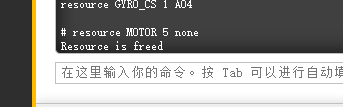
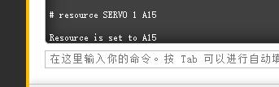
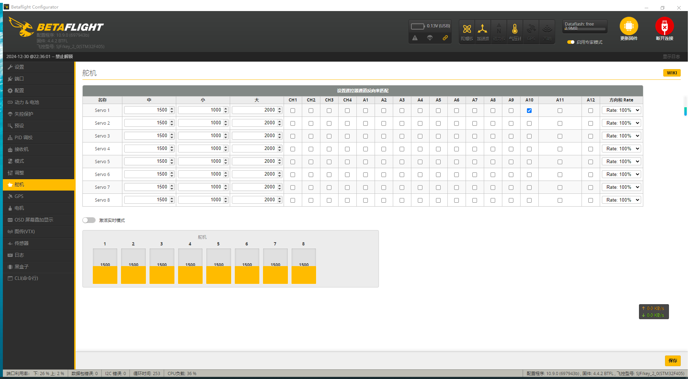

安装舵机
2025-01-03
本页的命令均为举例，不要照抄，按照你自己的飞控的实际情况替换掉命令中的端口等参数。
所有命令输入完毕后按回车
进入舵机页面。将SERVO 1后面的A10勾上，保存设置。此时，选定的通道已经能控制舵机。
确保你的飞控固件支持舵机。
将舵机正极焊接在5V焊盘，负极焊接在GND焊盘，信号线焊接在多余的电机焊盘上。
飞机连接配置器，进入CLI页面。
输入resource找到焊接的电机焊盘。例如焊接在5号电机焊盘，则寻找MOTOR 5。

MOTOR 5所在位置为A15。
输入resource MOTOR 5 none释放电机资源。

输入resource SERVO 1 A15。分配舵机资源。

输入save保存修改
进入接收机页面，确认想用来控制舵机的通道。例如想用AUX10通道来控制1号舵机。
进入舵机页面。将SERVO 1后面的A10勾上，保存设置。此时，选定的通道已经能控制舵机。
如果下方代表舵机的读数受控制但舵机不动，则尝试另外的电机口。
